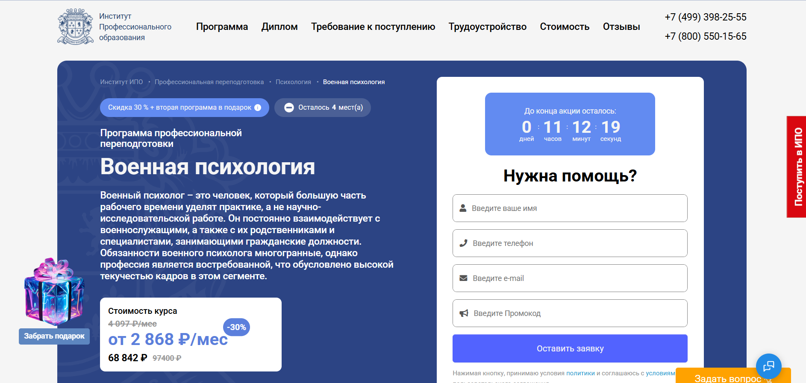
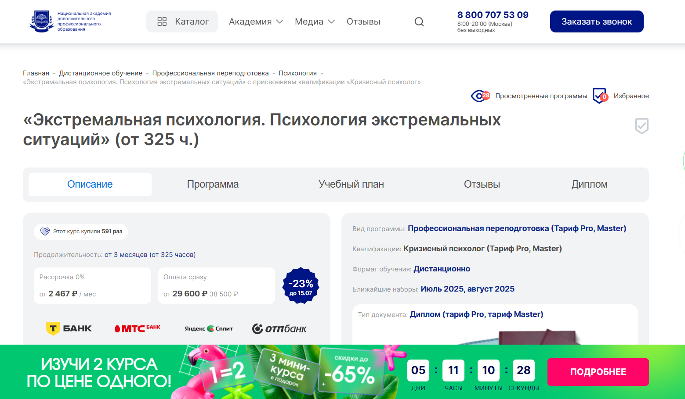
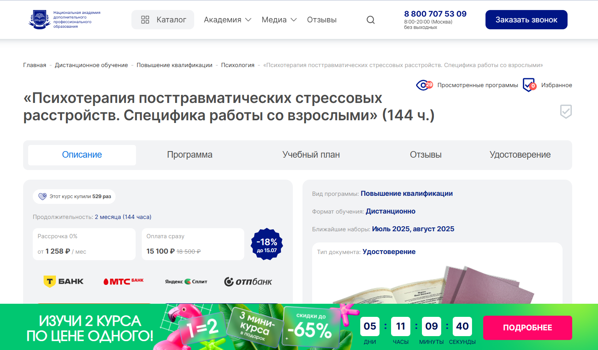
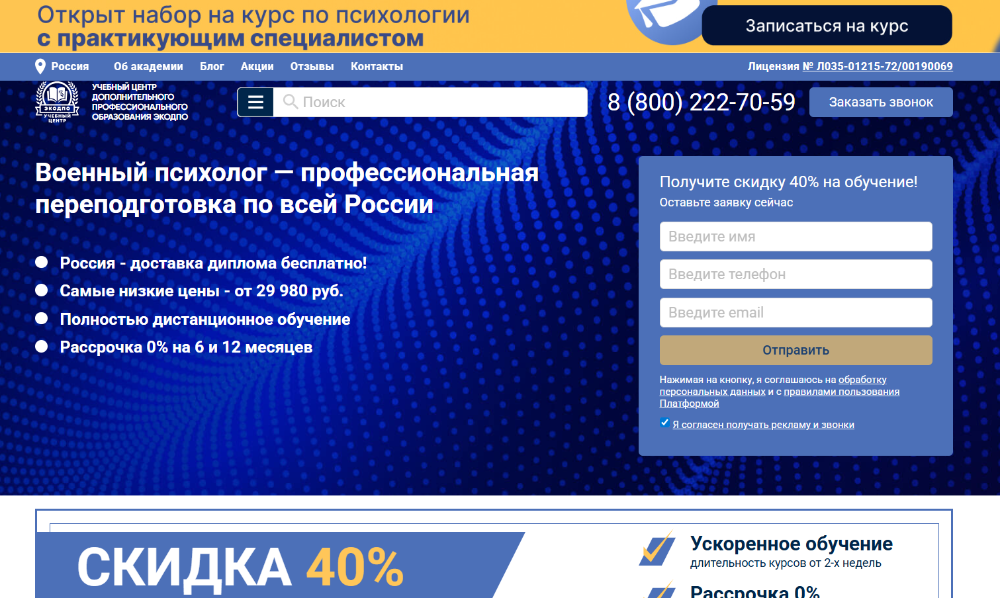
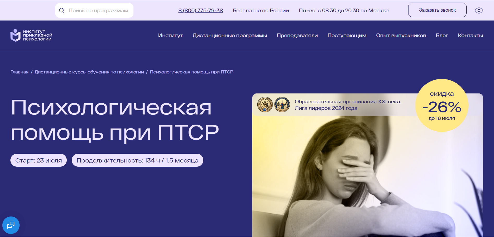
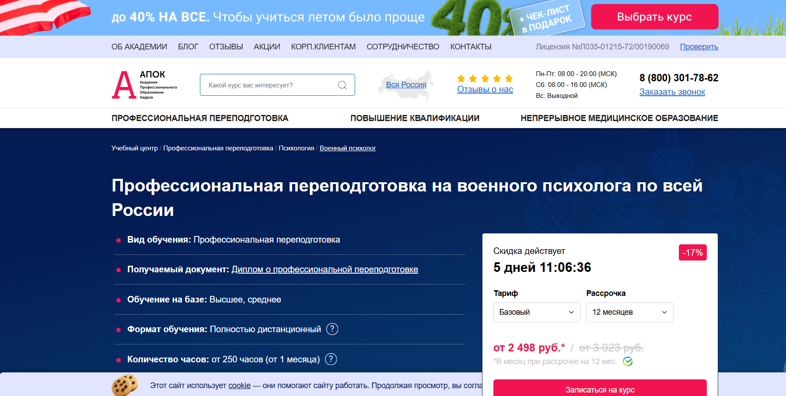
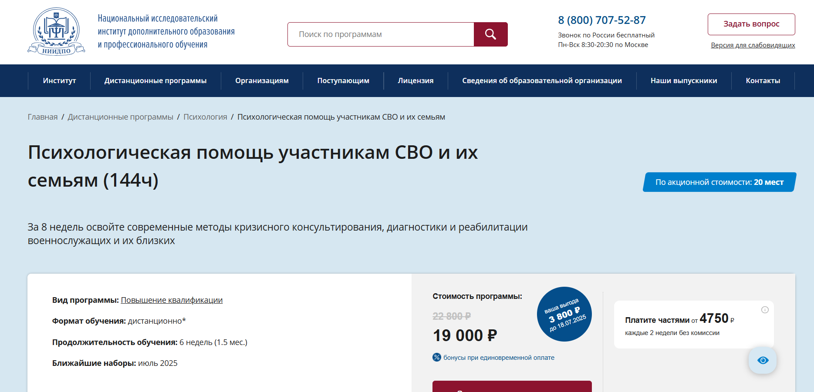
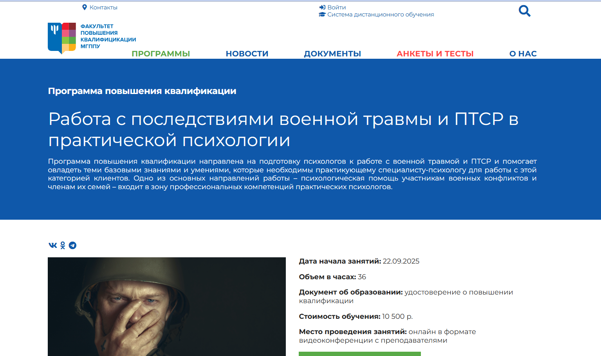
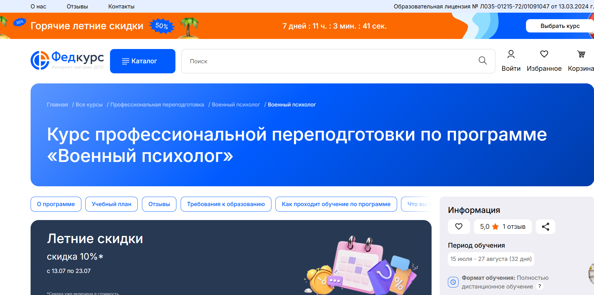
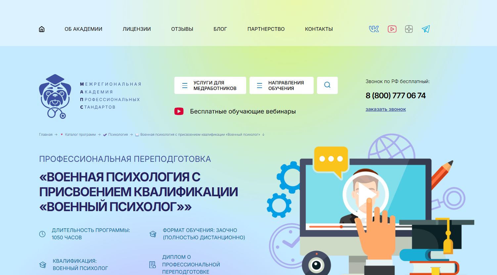

Военный психолог — это специалист, оказывающий психологическую поддержку военнослужащим и участвующий в подготовке военнослужащих к службе в условиях повышенной психоэмоциональной нагрузки. Обучение по военной психологии включает дистанционные образовательные программы, которые позволяют пройти профессиональную переподготовку или курсы повышения квалификации в удобном формате. Мы составили рейтинг учебных центров, где обучение проводится дистанционно с доступом к современным учебным материалам и методам психологической подготовки. После прохождения курсов слушатели получают диплом о переподготовке, подтверждающий квалификацию и готовность к работе в военных подразделениях и учреждениях.
Информация обновлена:
ТОП онлайн-курсов обучения на военного психологиа
- 🏆 Военная психология – ИПО
- 🏆 Экстремальная психология. Психология экстремальных ситуаций – НАДПО (по промокоду onlinekursy действует скидка 🎁 5%)
- 🏆 Психотерапия посттравматических стрессовых расстройств. Специфика работы со взрослыми – ННАДПО (по промокоду onlinekursy действует скидка 🎁 5%)
- Военный психолог – учебный центр ЭКОДПО
- Психологическая помощь при посттравматическом стрессовом расстройстве (ПТСР): диагностика и основные подходы к психотерапии взрослых — ИППСС
- Военный психолог – учебный центр АПОК
- Психологическая помощь участникам СВО и их семьям – НИИДПО
- Работа с последствиями военной травмы и ПТСР в практической психологии — МГППУ
- Военный психолог – Федкурс
- Военная психология с присвоением квалификации «Военный психолог» – МАПС
Отличительные преимущества каждой дистанционной программы обучения по военной психологии
| № | Название курса и школа | Отличительные преимущества | Ссылка |
|---|---|---|---|
| 🥇 | Военная психология – ИПО | Диплом, менторы, карьерный центр, бессрочный доступ, практические кейсы, помощь в трудоустройстве | Перейти |
| 🥈 | Экстремальная психология – НАДПО | 30% практики, доступ к библиотекам ЛитРес, кешбэк за обучение, HR-наставник | Перейти |
| 🥉 | Психотерапия ПТСР – НАДПО | Фокус на ПТСР, онлайн-практика, доступ к ЛитРес/БиблиоКлуб, внесение в госреестр | Перейти |
| 4 | Военный психолог – ЭКОДПО | VIP-обучение, бесплатная пересдача, диплом за 1 день, корректировка дисциплин | Перейти |
| 5 | Психологическая помощь при ПТСР – ИППСС | 13% налоговый вычет, более 2000 вебинаров, доступ без профильного образования | Перейти |
| 6 | Военный психолог – АПОК | Гибкие тарифы, обучение на ПО «АПОК Стади», регистрация диплома до 60 дней | Перейти |
| 7 | Психологическая помощь участникам СВО – НИИДПО | Поддержка семей, супервизии, доступность без псих. образования, более 13 000 вебинаров | Перейти |
| 8 | Работа с последствиями военной травмы – МГППУ | 36 часов, глубокая практика, преподаватели МГППУ, государственный вуз | Перейти |
| 9 | Военный психолог – Федкурс | Одна из самых низких цен, диплом в ФИС ФРДО, бессрочный доступ | Перейти |
| 10 | Военная психология с квалификацией – МАПС | 1050 часов, диплом с регистрацией, поддержка, доступ 24/7, налоговый вычет | Перейти |
1. 🏆 Военная психология – Институт Профессионального Образования
- ✅ Официальный сайт: ipo.msk.ru
- 💸 Цена: 68 842 ₽ (со скидкой 30%)
- 💳 Рассрочка: от 2 868 ₽/мес до 24 месяцев, беспроцентно
- 📚 Формат: дистанционный формат, включает видеолекции, тесты, практические задания, вебинары и менторскую поддержку
- ⏳ Продолжительность: 9 месяцев (800 часов)
- 📜 Документ: диплом о профессиональной переподготовке
- 📝 Трудоустройство: помощь с составлением резюме, карьерные консультации, рекомендации от кураторов и рассылка в партнерские компании
- 🔷 Для кого подходит курс: для начинающих без опыта, действующих психологов, сотрудников МЧС, ВС РФ и всех, кто связан с обеспечением психологической поддержки военнослужащих
Особенности:
Обучение в дистанционном формате позволяет совмещать занятия с работой или службой. Программа рассчитана на подготовку специалистов, способных оказывать психологическую поддержку военнослужащим и их семьям. Студенты изучают практические методы и теоретическую базу военной психологии, участвуют в вебинарах, анализируют кейсы и получают менторскую поддержку. Диплом выдается после успешного завершения курса и признается на территории всей РФ. По окончании курса выпускники готовы выполнять профессиональные задачи в военных учреждениях и гражданских структурах, связанных с военной службой.
Чему учатся студенты:
- Пониманию специфики психологических аспектов службы в военных условиях
- Анализу причин девиантного поведения среди военнослужащих и способам его профилактики
- Оказанию помощи в адаптации после боевых действий и возвращении к гражданской жизни
- Проведению психологической диагностики и сопровождению в кризисных ситуациях
- Методам профилактики профессионального выгорания у специалистов
- Работе с семьями и детьми участников боевых действий
Преподаватели:
- Наталья Николаевна Бербер — кандидат психологических наук, профессиональный психолог
- Мария Андреевна Егиазарова — тренер, психолог-консультант
- Анна Алексеевна Шавырина — преподаватель с практическим опытом
Преимущества:
- Формат обучения — полностью дистанционный, с доступом к материалам 24/7
- Получение диплома государственного образца
- Разработка практических навыков и методов психологической помощи
- Возможность пройти переподготовку дистанционно с любой точки страны
- Поддержка карьерного центра и помощь в трудоустройстве
- Бесплатные дополнительные курсы и бессрочный доступ к материалам
- Индивидуальная работа с ментором и участие в кейс-разборах
- Гибкий график для совмещения с основной занятостью
Отзывы учеников:
Студенты отмечают профессионализм преподавателей, насыщенную учебную программу и гибкость дистанционного формата. Особенно ценятся практические кейсы, поддержка наставников и возможность совмещения с основной работой. Многие подчеркивают рост профессиональных навыков и быстрый отклик специалистов приемной комиссии.
Перейти на официальный сайт курса2. 🏆 Экстремальная психология. Психология экстремальных ситуаций – Национальная академия дополнительного профессионального образования

- ✅ Официальный сайт: nadpo.ru
- 💸 Цена: от 29 600 ₽ (вместо 38 500 ₽ )
- 💳 Рассрочка: 0% от 2 467 ₽ в месяц
- 📚 Формат: дистанционные видеолекции, задания, тестирование, доступ к библиотекам ЛитРес и БиблиоКлуб
- ⏳ Продолжительность: от 3 месяцев (325 часов и более)
- 📜 Документ: диплом о профессиональной переподготовке
- 📝 Трудоустройство: консультации с HR-наставником, предложения от партнёров во время обучения
- 🔷 Для кого подходит курс: для желающих освоить дистанционную профессиональную переподготовку в сфере психологической поддержки и работы с кризисными ситуациями
Особенности:
Программа обучения проходит в дистанционном формате и подходит для всех, кто хочет получить диплом без отрыва от основной работы. Курс разработан в соответствии с требованиями ФГОС, охватывает ключевые психологические аспекты работы в экстремальных условиях и направлен на формирование практических и теоретических знаний. Уже в процессе обучения студенты начинают практику. Формат обучения включает интерактивные материалы, тесты и задания. Благодаря удобной рассрочке без процентов курс становится доступен широкому кругу слушателей. Выпускники получают диплом установленного образца и могут работать на должности психолога в государственных и военных учреждениях, а также в гражданских структурах.
Чему учатся студенты:
- Изучают методы психологической помощи в экстремальных и кризисных ситуациях
- Осваивают психологическую подготовку и поддержку военнослужащих
- Приобретают навыки кризисного реагирования
- Изучают психологические особенности поведения в условиях угрозы жизни
- Формируют профессиональные навыки для оказания поддержки в военных подразделениях
Преподаватели:
- Данные о преподавателях не указаны на официальном сайте
Преимущества:
- Обучение проводится дистанционно с доступом к материалам 24/7
- Соответствие государственным образовательным стандартам
- Более 30% практических занятий
- Поддержка кураторов и консультантов на всех этапах прохождения курсов
- Возможность начать карьеру уже во время прохождения обучения
- Получение диплома, действующего на всей территории РФ
- Участие в бонусной системе — кешбэк за обучение
- Гибкая система оплаты и беспроцентная рассрочка
Отзывы учеников:
Студенты хвалят курс за доступность дистанционного формата, понятную структуру обучения и практическую направленность. Часто отмечают возможность совмещать учебу с работой и индивидуальную поддержку от преподавателей и HR-наставников.
Перейти на официальный сайт курса3. 🏆 Психотерапия посттравматических стрессовых расстройств. Специфика работы со взрослыми – Национальная академия дополнительного профессионального образования

- ✅ Официальный сайт: nadpo.ru
- 💸 Цена: 15 100 ₽ ( скидка 18%)
- 💳 Рассрочка: 0%, от 1 258 ₽ в месяц
- 📚 Формат: дистанционные занятия, видеолекции, домашние задания, итоговое тестирование
- ⏳ Продолжительность: 2 месяца (144 академических часа)
- 📜 Документ: удостоверение о повышении квалификации, внесённое в ФИС ФРДО
- 📝 Трудоустройство: помогает начать частную практику, работать в клиниках и онлайн
- 🔷 Для кого подходит курс: для психологов, клинических специалистов, работников психологической службы и тех, кто хочет освоить методы поддержки при ПТСР
Особенности:
Программа обучения полностью проходит дистанционно, что позволяет совмещать процесс получения новых профессиональных навыков с текущей работой. Курс разработан с учётом практической подготовки специалистов, работающих с последствиями тяжёлых психотравм. Студенты изучают методы психологической помощи жертвам насилия, ветеранам и людям, пережившим утрату. Обучение включает изучение психологических аспектов ПТСР, подходы современной клинической психологии, а также адаптировано под дистанционный формат с доступом к электронным библиотекам ЛитРес и Библиоклуб. Обучение проводится квалифицированными преподавателями. Документы, выданные по завершении курса, официально регистрируются в госреестре.
Чему учатся студенты:
- Оказывать психологическую поддержку при ПТСР
- Проводить индивидуальные и групповые консультации
- Применять методы психологической реабилитации
- Работать с жертвами насилия и военных конфликтов
- Вести онлайн-консультирование в дистанционном формате
- Осваивать практические навыки в работе с травмой
Преподаватели:
- Информация о преподавателях на официальном сайте nadpo.ru
Преимущества:
- Дистанционное обучение с доступом к учебным материалам в любое время
- Получение удостоверения, внесённого в ФИС ФРДО
- Рассрочка без переплат
- Бесплатный доступ к крупнейшим библиотекам
- Формирование практических навыков для работы в психологической службе
- Ориентированность на подготовку специалистов для работы с военнослужащими
- Подходит для профессионального роста военных психологов
- Входит в ТОП-3 организаций онлайн-образования по соотношению цены и качества
Отзывы учеников:
Студенты хвалят доступный формат обучения, удобство прохождения курса в любом удобном месте, высокое качество учебных материалов. Отмечают поддержку преподавателей и возможность сразу применять знания на практике. Часто подчеркивают актуальность программы для специалистов, работающих с военнослужащими и жертвами кризисных ситуаций.
Перейти на официальный сайт курса4. Военный психолог – учебный центр дополнительного профессионального образования ЭКОДПО
- ✅ Официальный сайт: ecodpo.ru
- 💸 Цена обучения: от 29 980 ₽ со скидкой (вместо 49 980 ₽).
- 💳 Рассрочка: 0% на 6 или 12 месяцев, от 2 500 ₽/мес.
- 📚 Формат: дистанционный формат — текстовые материалы, тестирование, онлайн-встречи с преподавателями, индивидуальные занятия (на VIP-тарифе).
- ⏳ Продолжительность: от 250 до 555 академических часов.
- 📜 Документ: диплом установленного образца о профессиональной переподготовке.
- 📝 Трудоустройство: возможно в военных подразделениях, спецслужбах, гражданских структурах.
- 🔷 Для кого подходит курс: для специалистов с высшим или средним профессиональным образованием, планирующих смену профессии или расширение компетенций в области психологии.
Особенности:
Обучение проходит дистанционно без обязательного посещения центра. Все программы соответствуют профстандартам и требованиям законодательства РФ. После окончания курса документы доставляются бесплатно по всей России. Слушатели изучают дисциплины, направленные на формирование компетенций в сфере психологической поддержки и подготовки военнослужащих. Платформа доступна 24/7, есть обратная связь от преподавателей, а также неограниченное количество бесплатных пересдач итогового теста. Курс подходит как для действующих специалистов, так и для тех, кто хочет получить новую профессию без отрыва от работы.
Чему учатся студенты:
- Психологическим методам укрепления моральной и боевой готовности личного состава
- Диагностике и коррекции посттравматических стрессовых расстройств
- Проведению психологической работы в условиях воинской деятельности
- Консультированию военнослужащих в кризисных ситуациях
- Анализу морально-психологического состояния воинских коллективов
- Психологическому отбору и профориентации кандидатов в военную службу
- Применению клинической психологии в условиях армейской среды
Преподаватели:
- Информация о преподавателях отсутствует на сайте. Консультации проводят практикующие специалисты центра.
Преимущества:
- Зачисление без вступительных экзаменов
- Бесплатная пересдача итогового тестирования
- Возможность обучения по индивидуальному графику
- Оформление доступа в СДО в течение одного дня (для VIP тарифа)
- Выдача диплома за 1 день после окончания курса (на премиум-тарифе)
- Бесплатная доставка документов почтой или курьером
- Возможность корректировки дисциплин (на стандартном тарифе)
- Доступ к учебным материалам 24/7
Отзывы учеников:
Слушатели отмечают удобство дистанционного формата, доступность преподавателей, актуальность материалов и гибкие условия рассрочки. Особо подчеркивают, что обучение не мешает основной работе, а диплом принимается государственными и частными работодателями.
Перейти на официальный сайт курса5. Психологическая помощь при посттравматическом стрессовом расстройстве (ПТСР): диагностика и основные подходы к психотерапии взрослых — Институт прикладной психологии в социальной сфере

- ✅ Официальный сайт: ippss.ru
- 💸 Цена: 11 200 ₽ ( скидка -26%)
- 💳 Рассрочка: доступна от 933 ₽/мес, возврат 13% через налоговый вычет
- 📚 Формат: дистанционный формат — видеолекции, конспекты, тестирования, практические задания с обратной связью, более 2000 записей вебинаров
- ⏳ Продолжительность: 1,5 месяца (134 академических часа)
- 📜 Документ: удостоверение о повышении квалификации с регистрацией в ФИС ФРДО
- 📝 Трудоустройство: документ дает право официально работать, признан по всей России
- 🔷 Для кого подходит курс: для психологов, социальных работников, военных психологов, а также специалистов, оказывающих поддержку военнослужащим и пострадавшим в кризисных ситуациях
Особенности:
Программа обучения проходит в дистанционном формате и не требует наличия высшего психологического образования. Курс разработан на основе ФГОС ВО и профессиональных стандартов, действующих в области клинической психологии и социальной сферы. Уделяется внимание не только теории, но и развитию прикладных профессиональных навыков. Доступ к материалам сохраняется после окончания курса на 3 месяца. Программа включает регулярные вебинары с экспертами и обширную библиотеку с инструментами для диагностики и оказания психологической помощи. По итогу обучения слушатели получают удостоверение установленного образца, подтверждающее квалификацию.
Чему учатся студенты:
- Выявлять и диагностировать ПТСР с помощью опросников и шкал
- Применять модели психических травм в практической работе
- Оказывать психологическую поддержку в посткризисных ситуациях
- Работать с последствиями стресса, включая вторичную травматизацию
- Использовать прикладные техники и алгоритмы психологической помощи
Преподаватели:
- Плющева Ольга Александровна — клинический психолог, преподаватель психологии, супервизор, практический опыт более 20 лет
Преимущества:
- Обучение проводится полностью дистанционно, доступ из любого региона
- Не требуется сдача вступительных экзаменов или профильное образование
- Практические задания с проверкой и обратной связью от эксперта
- Доступ к более чем 10 000 записям вебинаров по клинической психологии
- Выдается удостоверение с регистрацией в госреестре
- Поддержка слушателей через чат и техподдержку 7 дней в неделю
- Сертификаты за участие в вебинарах входят в пакет
- Возможность получения налогового вычета 13%
Отзывы учеников:
Слушатели курса подчеркивают насыщенность программы и четкость изложения. Часто отмечают полезность тестов, практических заданий и вебинаров. Особенно ценится доступность материалов и поддержка преподавателей, а также прикладной формат обучения, который помогает сразу применять знания в работе.
Перейти на официальный сайт курса6. Военный психолог – учебный центр АПОК
- ✅ Официальный сайт: apokdpo.ru
- 💸 Цена: от 29 980 ₽ (со скидкой 17% )
- 💳 Рассрочка: от 2 498 ₽/мес, беспроцентная до 12 месяцев
- 📚 Формат: дистанционные видеоуроки, учебные материалы, зачёты, итоговое тестирование, индивидуальные занятия на тарифе «Премиум»
- ⏳ Продолжительность: от 250 часов (в среднем 1–3 месяца)
- 📜 Документ: диплом о профессиональной переподготовке с регистрацией в ФИС ФРДО
- 📝 Трудоустройство: возможность повышения по службе, применимость в военных учреждениях и гражданских структурах
- 🔷 Для кого подходит курс: для специалистов с высшим или средним профессиональным образованием, желающих работать в сфере военной психологии
Особенности:
Программа профессиональной переподготовки позволяет изучить специфику военной психологии в дистанционном формате. Обучение проходит дистанционно, что делает курс доступным из любого региона России. После успешного завершения обучения выпускники получают документы государственного образца. В рамках образовательного процесса применяется современное ПО «АПОК Стади», зарегистрированное в реестре отечественного ПО. Курсы позволяют освоить практические и теоретические знания, необходимые для оказания психологической поддержки военнослужащим. Программа адаптируется под уровень подготовки слушателя и включает только профильные дисциплины.
Чему учатся студенты:
- Изучают методы психологической подготовки и отбора в ВС РФ
- Осваивают психологические аспекты боевой деятельности
- Разбираются в психических процессах в условиях службы
- Анализируют социально-психологические явления военного конфликта
- Получают навыки кризисного сопровождения
- Изучают зарубежный опыт морально-психологической подготовки
- Учатся организовывать психологическую службу в военных учреждениях
Преподаватели:
- ФИО преподавателей на сайте не указаны
Преимущества:
- Обучение проводится полностью дистанционно
- Индивидуальный подход к каждому слушателю
- Быстрая доставка дипломов по всей России
- Официальная лицензия на образовательную деятельность
- Возможность получить налоговый вычет 13%
- Поддержка методистов и менеджеров на всех этапах обучения
- Скидки до 40% по семейной акции
- Регистрация диплома в ФИС ФРДО от 1 до 60 дней в зависимости от тарифа
Отзывы учеников:
В интернете пользователи отмечают удобство дистанционного обучения, оперативную работу сотрудников центра и возможность обучения по гибкому графику. Студенты часто упоминают доступный формат обучения, насыщенные программы и быструю выдачу дипломов. Также выделяется высокий уровень сопровождения в процессе обучения.
Перейти на официальный сайт курса7. Психологическая помощь участникам СВО и их семьям – Национальный институт дополнительного и дистанционного профессионального образования

- ✅ Официальный сайт: niidpo.ru
- 💸 Цена: 19 000 ₽ (вместо 22 800 ₽ )
- 💳 Рассрочка: от 4750 ₽ каждые 2 недели без комиссии
- 📚 Формат: дистанционное обучение, текстовые и видеолекции, практические задания, вебинары, тестирование
- ⏳ Продолжительность: 6 недель
- 📜 Документ: удостоверение о повышении квалификации
- 📝 Трудоустройство: возможность расширить практику, работать с военнослужащими и их семьями
- 🔷 Для кого подходит курс: психологам, педагогам, социальным работникам, медикам, а также всем, кто хочет поддержать своих близких
Особенности:
Программа подготовки позволяет получить практические навыки работы с посттравматическим стрессом и последствиями боевого опыта. Обучение проходит дистанционно, доступно из любого региона. Участники получают не только теоретическую базу, но и готовые инструменты для практики. В рамках курса студенты изучают методы поддержки детей военнослужащих, семейную адаптацию и саморегуляцию. Занятия ведут эксперты в области клинической психологии и кризисного консультирования. Весь учебный процесс строится с применением современных дистанционных образовательных технологий. После завершения курса доступ к материалам сохраняется бессрочно. Возможно участие в онлайн супервизиях для разбора практических кейсов и повышения профессиональной уверенности.
Чему учатся студенты:
- Методам диагностики и коррекции ПТСР у участников СВО
- Работе с тревожностью у детей и взрослых
- Психологическому сопровождению семей военнослужащих
- Техникам когнитивно-поведенческой и телесно-ориентированной терапии
- Разработке программ психологической поддержки
- Организации кризисного консультирования и реабилитации
Преподаватели:
- Головина Наталия Андреевна — педагог-психолог, гештальт-терапевт
- Кирпичева Людмила Николаевна — практический психолог, специалист по ПТСР и военной травме, сертифицированный гештальт-терапевт
Преимущества:
- Полностью дистанционный формат обучения с гибким графиком
- 16% скидка и возможность рассрочки без переплат
- Доступ к более чем 13 000 вебинаров и учебным материалам после окончания курса
- Подходит даже без психологического образования
- Участие в открытых супервизиях и профессиональное сообщество
- Программа учитывает специфику военной психологии и работы с семьями
- Помогает как в личной жизни, так и в профессиональной деятельности
- Выдается удостоверение государственного образца
Отзывы учеников:
Слушатели курса отмечают практичность знаний, поддержку преподавателей и удобный дистанционный формат обучения. Положительно оценивают бессрочный доступ к материалам и возможность применять знания сразу после окончания курса. Также хвалят полезность вебинаров и доступность преподавателей при возникновении вопросов.
Перейти на официальный сайт курса8. Работа с последствиями военной травмы и ПТСР в практической психологии — Московский государственный психолого-педагогический университет

- ✅ Официальный сайт: dpo.mgppu.ru
- 💸 Цена: 10 500 ₽
- 💳 Рассрочка: не предусмотрена
- 📚 Формат: дистанционный формат с видеоконференциями, мини-лекциями, вебинарами и практическими заданиями
- ⏳ Продолжительность: 36 часов
- 📜 Документ: удостоверение о повышении квалификации
- 📝 Трудоустройство: повышает шансы при устройстве на должность психолога в военных и социальных учреждениях
- 🔷 Для кого подходит курс: для клинических психологов, педагогов-психологов, специалистов с высшим профессиональным образованием в области психологии
Особенности:
Программа направлена на развитие профессиональных навыков в области оказания психологической поддержки участникам военных конфликтов и членам их семей. Обучение проходит дистанционно, что особенно удобно для специалистов, совмещающих практику с обучением. Особое внимание уделяется методам психологической помощи при ПТСР и последствиях военной травмы. Освоение дистанционных образовательных технологий позволяет получать знания в любом удобном месте и времени. По завершении обучения слушатели получают документы государственного образца, подтверждающие уровень квалификации. Курс соответствует требованиям профстандарта «Психолог в социальной сфере» и направлен на поддержку военнослужащих и их адаптацию к мирной жизни. Программа выстроена таким образом, чтобы помочь в решении психологических задач различной сложности, в том числе связанных с кризисными ситуациями. Основа курса — практические навыки, востребованные в сфере клинической психологии.
Чему учатся студенты:
- Основам работы с последствиями военной травмы и ПТСР
- Методам психологической самопомощи специалистов
- Эффективным способам взаимодействия с ветеранами и их семьями
- Применению техник клинической психологии в кризисных ситуациях
- Использованию современных дистанционных образовательных технологий в практике
Преподаватели:
- Занятия проводят преподаватели МГППУ — ведущие специалисты в области клинической психологии и психотерапии
Преимущества:
- Обучение проводится в дистанционном формате — легко совмещать с работой
- Подходит для специалистов с опытом и тех, кто только проходит профессиональную переподготовку
- Выдается удостоверение установленного образца
- Включает практические навыки для работы в военных учреждениях
- Ориентирована на реальные задачи клинического психолога
- Обеспечивает психологическую подготовку к работе с посттравматическими состояниями
- Актуальные знания о психологических аспектах военной службы
- Подходит для работы в системе психологической службы и социальной поддержки
Отзывы учеников:
Слушатели отмечают структурированную подачу материала, сильную практическую направленность и возможность быстро применить знания на практике. Отдельно выделяют доступность преподавателей и гибкий график обучения. Многим программа помогла лучше понять специфику военной психологии и получить документы, подтверждающие повышение квалификации.
Перейти на официальный сайт курса9. Военный психолог – Федкурс
- ✅ Официальный сайт: fedkurs.ru
- 💸 Цена: 9 255 ₽ (со скидкой 10% )
- 💳 Рассрочка: доступна по запросу от 771 ₽/мес, оплата — онлайн или по QR-коду
- 📚 Формат: дистанционный формат, видеолекции, итоговое тестирование, личный кабинет с доступом 24/7
- ⏳ Продолжительность: от 1 до 3 месяцев, всего 256 часов
- 📜 Документ: диплом о профессиональной переподготовке установленного образца
- 📝 Трудоустройство: диплом даёт право официально работать в государственных и частных организациях
- 🔷 Для кого подходит курс: для специалистов с высшим образованием, желающих получить востребованную профессию в психологической сфере
Особенности:
Курс подходит тем, кто хочет пройти профессиональную переподготовку дистанционно и работать с военнослужащими. Обучение проходит полностью онлайн, без необходимости брать отпуск или приезжать в учебное заведение. Доступ к платформе открыт в любое время, а итоговое тестирование можно сдавать с повторной попыткой бесплатно. По завершении обучения выдается диплом, внесённый в ФИС ФРДО. Все документы доставляются почтой без дополнительной платы. Образовательная программа лицензирована и соответствует требованиям профстандарта "Психолог в служебной деятельности".
Чему учатся студенты:
- Оказывать психологическую поддержку военнослужащим
- Проводить диагностику психических функций
- Обеспечивать психологическую устойчивость личного состава
- Анализировать поведение в условиях боевых действий
- Осуществлять профессиональный отбор в военные подразделения
Преподаватели:
- Информация о преподавателях не указана на официальном сайте
Преимущества:
- Обучение проводится в дистанционном формате без привязки к графику
- Не требуется очное присутствие или сдача вступительных экзаменов
- Бессрочный доступ к учебным материалам
- Бесплатная доставка диплома по всей России
- Диплом вносится в государственный реестр
- Не требуется опыт военной службы
- Переподготовка позволяет официально работать в профильной сфере
- Высокий спрос на специалистов в военной психологии
Отзывы учеников:
Слушатели положительно отзываются о дистанционном формате и гибком графике. Отмечают удобный личный кабинет и доступность материалов. Особенно ценят возможность учиться без отрыва от работы. Среди плюсов: простая подача заявки, оперативная поддержка и отсутствие бюрократии.
Перейти на официальный сайт курса10. Военная психология с присвоением квалификации «Военный психолог» – Межрегиональная Академия Профессиональных Стандартов

- ✅ Официальный сайт: maps-edu.ru
- 💸 Цена: 28 800 ₽ (вместо 32 000 ₽ )
- 💳 Рассрочка: беспроцентная на 12 месяцев от 2 400 ₽/мес
- 📚 Формат: дистанционное обучение, видеолекции, домашние задания, контрольное тестирование, круглосуточная техподдержка
- ⏳ Продолжительность: 1050 академических часов
- 📜 Документ: диплом о профессиональной переподготовке, вносимый в реестр ФИС ФРДО
- 📝 Трудоустройство: оформление официального документа позволяет использовать диплом для трудоустройства в военных учреждениях и структурах
- 🔷 Для кого подходит курс: для специалистов с высшим или средним профессиональным образованием, желающих получить квалификацию для работы в сфере военной психологии
Особенности:
Программа профессиональной переподготовки позволяет изучить аспекты военной психологии в дистанционном формате. Все модули адаптированы для самостоятельного освоения в удобном темпе. Учебный процесс организован с использованием современных дистанционных технологий, что делает его доступным из любой точки России. Выпускники получают диплом установленного образца, который вносится в государственный реестр. После завершения обучения студенты овладевают необходимыми практическими и теоретическими знаниями, чтобы оказывать психологическую поддержку военнослужащим. Учебные материалы доступны 24/7, что позволяет совмещать переподготовку с основной деятельностью. Предусмотрен налоговый вычет 13% и бесплатная доставка документов по РФ.
Чему учатся студенты:
- Изучают методы психологической помощи военнослужащим
- Овладевают навыками кризисного сопровождения и реабилитации
- Разбираются в психологических особенностях боевых ситуаций
- Формируют профессиональные компетенции для службы в военных учреждениях
- Понимают структуру психологической службы вооружённых сил
- Осваивают современные подходы к психологическому отбору
Преподаватели:
- Информация о преподавателях на сайте не указана. Подбор преподавателей осуществляется Академией с учетом профиля курса и квалификации.
Преимущества:
- Прохождение переподготовки дистанционно без отрыва от работы
- Документы об окончании курса вносятся в государственный реестр
- Поддержка на всех этапах обучения и бесплатная пересдача тестов
- Доступ к материалам в любое время с ПК или смартфона
- Обучение проводится по лицензии, официально, с заключением договора
- Возможность вернуть часть стоимости через налоговый вычет
- Подходит для специалистов, работающих или планирующих карьеру в военных структурах
- Доступна рассрочка без переплат и первоначального взноса
Отзывы учеников:
Студенты высоко оценивают организацию дистанционного обучения, доступность преподавателей и подробность учебных материалов. Часто отмечают клиентоориентированность сотрудников и оперативность консультаций. Выпускники благодарны за возможность освоить востребованную специальность без отрыва от основной деятельности и положительно отзываются о качестве полученного образования.
Перейти на официальный сайт курсаКто такой военный психолог?
Военный психолог — это специалист, работающий в системе вооружённых сил и обеспечивающий психологическое сопровождение военнослужащих. Его главная задача — поддержка психоэмоционального состояния бойцов, помощь в адаптации к военной службе, преодолении стрессов и посттравматических расстройств.
В условиях боевых действий и строгой дисциплины армии роль психолога крайне важна. Он помогает избежать психологических срывов, повысить боевой дух, а также решает конфликты внутри военных коллективов.
Что делают военные психологи и чем занимаются?
Работа военного психолога многогранна и включает различные направления психологической помощи. Основные обязанности можно разделить на несколько категорий:
- Диагностика психоэмоционального состояния военнослужащих с помощью тестов и бесед;
- Проведение тренингов по стрессоустойчивости, лидерству и командной работе;
- Оказание экстренной помощи в кризисных ситуациях и после боевых действий;
- Адаптация новобранцев к армейским условиям;
- Работа с семьями военных по вопросам психологической поддержки;
- Разработка программ профилактики психологических расстройств;
- Участие в оценке пригодности к службе в особых условиях (спецподразделения, командировки и пр.).
Военные психологи работают как в мирное, так и в военное время. Они могут находиться в частях, госпиталях, военных училищах и даже в зоне боевых действий.
Что должен знать и уметь военный психолог?
Кандидат на должность военного психолога должен обладать глубокими знаниями в области психологии, военной специфики и гуманитарных наук. Обязательные навыки включают:
- Понимание основ общей, возрастной и социальной психологии;
- Умение проводить индивидуальные и групповые консультации;
- Навыки кризисного консультирования и посттравматической терапии;
- Знание методов психодиагностики и психологического тестирования;
- Способность быстро принимать решения в условиях стресса и неопределённости;
- Развитые коммуникативные навыки и эмоциональный интеллект.
Также важно иметь хорошую физическую подготовку и быть готовым к работе в сложных условиях, в том числе в командировках или боевых зонах.
Востребованность и зарплаты военных психологов в России
Профессия военного психолога остаётся актуальной в России. С учётом международной обстановки, рост числа контрактников и реализация программ по улучшению условий службы повышают спрос на квалифицированных специалистов.
Заработная плата военных психологов зависит от звания, выслуги лет, региона и ведомства. В среднем, по России:
- Начинающий специалист — от 45 000 до 65 000 рублей в месяц;
- Опытный психолог с офицерским званием — от 70 000 до 100 000 рублей;
- Психологи в спецподразделениях и на командных должностях — от 120 000 рублей и выше.
Дополнительно выплачиваются надбавки за секретность, выслугу лет, службу в горячих точках, жильё и питание.
Как стать военным психологом и где учиться?
Для того чтобы стать военным психологом, необходимо пройти профильное обучение и пройти медицинскую и психологическую комиссию для допуска к службе. Возможные пути получения образования:
- Поступление в военные вузы с факультетами психологии (например, Военный университет Минобороны РФ);
- Гражданские вузы с последующим прохождением военной кафедры (например, МГУ, СПбГУ, РГГУ);
- Магистратура или дополнительное образование по военной и кризисной психологии.
После окончания вуза следует поступление на службу по контракту или через мобилизационный резерв. Важно пройти все этапы отбора, включая психологическое тестирование и проверку физической подготовки.
Личные качества успешного военного психолога
Работа в армии требует от специалиста определённого набора личностных характеристик:
- Стрессоустойчивость и уравновешенность;
- Высокая эмпатия и сочувствие к другим;
- Дисциплинированность и чувство долга;
- Готовность работать в коллективе и помогать в любой ситуации;
- Способность сохранять конфиденциальность.
Без этих качеств будет трудно справляться с постоянным напряжением и высокой ответственностью.
Плюсы и минусы профессии
Как и любая профессия, работа военного психолога имеет свои преимущества и сложности.
- Плюсы: стабильная зарплата, социальные гарантии, возможность карьерного роста, служебное жильё;
- Минусы: психологическая нагрузка, частые командировки, необходимость строгой дисциплины, риск работы в опасных зонах.
Тем не менее, многие выбирают эту профессию по призванию и находят в ней настоящее удовлетворение.
Что включает в себя обучение по военной психологии?
Обучение на военного психолога включает изучение психологических аспектов службы, методов психологической помощи и психологической подготовки военнослужащих. Программа направлена на формирование профессиональных навыков и практических умений в области военной психологии, кризисной помощи и поддержки военнослужащих в условиях боевых действий и мирного времени.
Как проходит профессиональная переподготовка военного психолога дистанционно?
Профессиональная переподготовка военного психолога проходит дистанционно с использованием современных образовательных платформ. Слушателям предоставляются учебные материалы, доступ к лекциям и возможность взаимодействовать с преподавателями в удобное время. Такой дистанционный формат позволяет совмещать обучение с работой или службой.
Какие знания получают слушатели при дистанционном обучении по военной психологии?
В дистанционном обучении акцент делается на психологические особенности военной службы, методы психологической помощи, кризисные ситуации и психологическую реабилитацию. Слушатели изучают специфику военной среды, основы клинической психологии и организацию психологической службы в армии.
Какие документы получают выпускники после окончания курса?
После завершения обучения слушатели получают диплом установленного образца о дополнительном профессиональном образовании. В случае профессиональной переподготовки выдается диплом, дающий право на ведение профессиональной деятельности в сфере военной психологии.
Можно ли пройти переподготовку дистанционно с высшим образованием?
Да, переподготовку дистанционно могут пройти специалисты с высшим профессиональным образованием, особенно в смежных областях: психология, педагогика, социальная работа. Программа адаптирована под слушателей с различным уровнем подготовки.
Сколько длится дистанционное обучение на военного психолога?
Продолжительность обучения зависит от программы. В среднем дистанционный формат предполагает срок от 3 до 9 месяцев, в зависимости от объема учебных материалов и степени погружения в теоретические знания и практические навыки.
Какие программы подготовки военных психологов доступны онлайн?
Существуют различные программы подготовки: курсы повышения квалификации, профессиональная переподготовка, дистанционные образовательные программы. Все они направлены на развитие необходимых знаний и практического опыта в сфере психологической поддержки военнослужащих.
Чем отличается военный психолог от клинического?
Военные психологи специализируются на психологических особенностях службы, психологическом отборе, реабилитации и работе с кризисными состояниями. Клинический психолог работает с психическими расстройствами и в рамках клинической психологии, часто в медицинских учреждениях.
Кому подходит обучение по военной психологии?
Обучение подходит специалистам, желающим работать в военных учреждениях, психологических службах, заниматься поддержкой военнослужащих, психологической подготовкой и оценкой психологического состояния личного состава.
Какие навыки развивает дистанционное обучение?
Слушатели развивают навыки кризисного реагирования, психологической диагностики, проведения консультаций, организации психологической поддержки, изучают методы психологической коррекции и адаптации военнослужащих.
Как проходят итоговые тестирования при дистанционном обучении?
Итоговое тестирование проводится в удобном дистанционном формате через электронные платформы. Это может быть тестирование, написание итоговой работы или защита проекта. После успешного завершения курса выдается диплом.
Какая стоимость обучения на военного психолога?
Стоимость курса зависит от продолжительности, формата обучения, уровня преподавателей и учебного центра. В среднем цена на дистанционные курсы колеблется от 15 до 50 тысяч рублей.
Где можно пройти дистанционные курсы подготовки по военной психологии?
Дистанционные курсы предлагают лицензированные образовательные учреждения, высшие вузы, институты переподготовки и учебные центры, имеющие право на выдачу дипломов и удостоверений.
Какие перспективы у выпускников программ по военной психологии?
Выпускники получают возможность работать в военных подразделениях, гражданских структурах, медицинских учреждениях или открыть частную практику. Особенно востребованы специалисты по кризисным ситуациям и поддержке военнослужащих после боевых действий.
Какой уровень квалификации необходим для прохождения переподготовки?
Для прохождения курсов требуется наличие высшего образования или среднего профессионального образования в смежной области. Программы рассчитаны как на начинающих, так и на практикующих специалистов, желающих повысить уровень квалификации.
Можно ли совмещать обучение с работой?
Да, дистанционное обучение удобно для совмещения с работой. Слушатели учатся в любом удобном графике, имеют доступ к учебным материалам 24/7, проходят обучение в удобных условиях, сохраняя баланс между работой и учебой.
Как подать заявку на обучение по военной психологии?
Для подачи заявки необходимо выбрать учебный центр или вуз, пройти регистрацию онлайн, прикрепить документы об образовании, заключить договор на обучение и оплатить курс. После этого слушатель получает доступ к платформе и начинает обучение проходит дистанционно.
------------------------------------------------
Реклама. Информация о рекламодателе по ссылкам в статье.